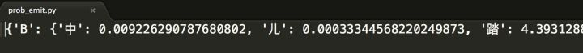
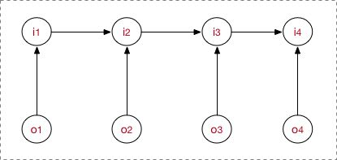

此文不错，在原译文基础上轻微修订
一、Preface
之前刚接触NLP时做相关的任务，也必然地涉及到了序列处理任务，然后自然要接触到概率图模型。当时在全网搜中文资料，陆续失望地发现竟然真的没有讲得清楚的博文，发现基本是把李航老师书里或CRF tutorial等资料的文字论述和公式抄来抄去的。当然，没有说别人讲的是错的，只是觉得，要是没有把东西说的让读者看得懂，那也是没意义啊。或者有些吧，就是讲了一大堆的东西，貌似也明白了啥，但还是不能让我很好的理解CRF这些模型究竟是个啥，完了还是有一头雾水散不开的感觉。试想，一堆公式扔过来，没有个感性理解的过渡，怎么可能理解的了。我甚至觉得，如果博客让人看不懂，那说明要么自己没理解透要么就是思维不清晰讲不清楚。所以默想，深水区攻坚还是要靠自己，然后去做调研做research，所以就写了个这个学习记录。
所以概率图的研究学习思考列入了我的任务清单。不过平时的时间又非常的紧，只能陆陆续续的思考着，所以时间拖得也真是长啊。
这是个学习笔记。相比其他的学习模型，概率图貌似确实是比较难以理解的。这里我基本全部用自己的理解加上自己的语言习惯表达出来，off the official form，表达尽量接地气。我会尽量将我所有理解过程中的每个关键小细节都详细描述出来，以使对零基础的初学者友好。包括理论的来龙去脉，抽象具象化，模型的构成，模型的训练过程，会注重类比的学习。
根据现有资料，我是按照概率图模型将HMM，MEMM，CRF放在这里一起对比学习。之所以把他们拿在一起，是因为他们都用于标注问题。并且之所以放在概率图框架下，是完全因为自己top-down思维模式使然。另外，概率图下还有很多的模型，这儿只学习标注模型。
正儿八经的，我对这些个概率图模型有了彻悟，是从我明白了生成式模型与判别式模型的那一刻。一直在思考从概率图模型角度讲他们的区别到底在哪。
另外，篇幅略显长，但咱们不要急躁，好好看完这篇具有良好的上下文的笔记，那肯定是能理解的，或者就多看几遍。
个人学习习惯就是，要尽可能地将一群没有结构的知识点融会贯通，再用一条树状结构的绳将之串起来，结构化，就是说要成体系，这样把绳子头一拎所有的东西都能拿起来。学习嘛，应该要是一个熵减的过程，卓有成效的学习应该是混乱度越来越小！这个思维方式对我影响还是蛮大的。
在正式内容之前，还是先要明确下面这一点，最好脑子里形成一个定势：
统计机器学习所有的模型（个别instant model和优化算法以及其他的特种工程知识点除外）的工作流程都是如此： a.训练模型参数，得到模型（由参数唯一确定）， b.预测给定的测试数据。 拿这个流程去挨个学习模型，思路上会非常顺畅。
除此之外，对初学者的关于机器学习的入门学习方式也顺带表达一下(empirical speaking)：
a.完整特征工程竞赛 b.野博客理论入门理解 c.再回到代码深入理解模型内部 d.再跨理论，查阅经典理论巨作。这时感性理性都有一定高度，会遇到很多很大的理解上的疑惑，这时3大经典可能就可以发挥到最大作用了。
很多beginer，就比如说学CRF模型，然后一上来就摆一套复杂的公式，什么我就问，这能理解的了吗？这是正确的开启姿势吗？当然了，也要怪那些博主，直接整一大堆核心公式，实际上读者的理解门槛可能就是一个过渡性的细枝末节而已。没有上下文的教育肯定是失败的（这一点我又想吐槽国内绝大部分本科的院校教育模式）。所以说带有完整上下文信息以及过程来龙去脉交代清楚才算到位吧。
而不是一上来就死啃被人推荐的“经典资料”，这一点相信部分同学会理解。好比以前本科零基础学c++ JAVA，上来就看primr TIJ，结果浪费了时间精力一直在门外兜圈。总结方法吸取教训，应该快速上手代码，才是最高效的。经典最好是用来查阅的工具书，我目前是李航周志华和经典的那3本迭代轮询看了好多轮，经常会反复查询某些model或理论的来龙去脉；有时候要查很多相关的东西，看这些书还是难以贯通，然后发现有些人的博客写的会更容易去理解。所以另外，学习资料渠道也要充分才行。
最后提示一下，请务必按照标题层级结构和目录一级一级阅读，防止跟丢。
二、Prerequisite
2.1 概率图
之前刚接触CRF时，一上来试图越过一堆繁琐的概率图相关概念，不过sad to say, 这是后面的前驱知识，后面还得反过来补这个点。所以若想整体把握，系统地拿下这一块，应该还是要越过这块门槛的。
当然了，一开始只需略略快速看一篇，后面可再返过来补查。
2.1.1 概览
在统计概率图（probability graph models）中，参考宗成庆老师的书，是这样的体系结构（个人非常喜欢这种类型的图）：
在概率图模型中，数据(样本)由公式 $G=(V,E)$ 建模表示：
-
$V$ 表示节点，即随机变量（放在此处的，可以是一个token或者一个label），具体地，用 $Y = (y_1, \cdots, y_n)$ 为随机变量建模，注意 $Y$ 现在是代表了一批随机变量（想象对应一条sequence，包含了很多的token）， $P(Y)$ 为这些随机变量的分布；
-
$E$ 表示边，即概率依赖关系。具体咋理解，还是要在后面结合HMM或CRF的graph具体解释。
2.1.2 有向图 vs. 无向图
上图可以看到，贝叶斯网络（信念网络）都是有向的，马尔科夫网络无向。所以，贝叶斯网络适合为有单向依赖的数据建模，马尔科夫网络适合实体之间互相依赖的建模。具体地，他们的核心差异表现在如何求 $P=(Y)$ ，即怎么表示 $Y=(y_1,\cdots,y_n)$ 这个的联合概率。
1. 有向图
对于有向图模型，这么求联合概率： $P(x_1, \cdots, x_n )=\prod_{i=0}P(x_i | \pi(x_{i}))$
举个例子，对于下面的这个有向图的随机变量(注意，这个图我画的还是比较广义的)：
应该这样表示他们的联合概率:
$P(x_1, \cdots, x_n )=P(x_1)·P(x_2|x_1 )·P(x_3|x_2 )·P(x_4|x_2 )·P(x_5|x_3,x_4 )$
应该很好理解吧。
2. 无向图
对于无向图，我看资料一般就指马尔科夫网络(注意，这个图我画的也是比较广义的)。
如果一个graph太大，可以用因子分解将 写为若干个联合概率的乘积。咋分解呢，将一个图分为若干个“小团”，注意每个团必须是“最大团”（就是里面任何两个点连在了一块，具体……算了不解释，有点“最大连通子图”的感觉），则有：
$P(Y )=\frac{1}{Z(x)} \prod_{c}\psi_{c}(Y_{c} )$
其中, $Z(x) = \sum_{Y} \prod_{c}\psi_{c}(Y_{c} )$，公式应该不难理解吧，归一化是为了让结果算作概率。
所以像上面的无向图：
$P(Y )=\frac{1}{Z(x)} ( \psi_{1}(X_{1}, X_{3}, X_{4} ) · \psi_{2}(X_{2}, X_{3}, X_{4} ) )$
其中， $\psi_{c}(Y_{c} )$ 是一个最大团 上随机变量们的联合概率，一般取指数函数的：
$\psi_{c}(Y_{c} ) = e^{-E(Y_{c})} =e^{\sum_{k}\lambda_{k}f_{k}(c,y|c,x)}$
好了，管这个东西叫做势函数。注意 $e^{\sum_{k}\lambda_{k}f_{k}(c,y|c,x)}$ 是否有看到CRF的影子。
那么概率无向图的联合概率分布可以在因子分解下表示为：
$P(Y )=\frac{1}{Z(x)} \prod_{c}\psi_{c}(Y_{c} ) = \frac{1}{Z(x)} \prod_{c} e^{\sum_{k}\lambda_{k}f_{k}(c,y|c,x)} = \frac{1}{Z(x)} e^{\sum_{c}\sum_{k}\lambda_{k}f_{k}(y_{i},y_{i-1},x,i)}$
注意，这里的理解还蛮重要的，注意递推过程，敲黑板，这是CRF的开端！
这个由Hammersly-Clifford law保证，具体不展开。
2.1.3 马尔科夫假设&马尔科夫性
这个也属于前馈知识。
1. 马尔科夫假设
额应该是齐次马尔科夫假设，这样假设：马尔科夫链 $(x_{1},\cdots,x_{n})$ 里的 $x_{i}$ 总是只受 $x_{i-1}$ 一个人的影响。 马尔科夫假设这里相当于就是个1-gram。
马尔科夫过程呢？即，在一个过程中，每个状态的转移只依赖于前n个状态，并且只是个n阶的模型。最简单的马尔科夫过程是一阶的，即只依赖于前一个状态。
2. 马尔科夫性
马尔科夫性是是保证或者判断概率图是否为概率无向图的条件。
三点内容：a. 成对，b. 局部，c. 全局。
我觉得这个不用展开。
2.2 判别式(discriminative)模型 vs. 生成式(generative)模型
在监督学习下，模型可以分为判别式模型与生成式模型。
重点来了。上面有提到，我理解了HMM、CRF模型的区别是从理解了判别式模型与生成式模型的那刻，并且瞬间对其他的模型有一个恍然大悟。我记得是一年前就开始纠结这两者的区别，但我只能说，栽在了一些烂博客上，大部分都没有自己的insightful理解，也就是一顿官话，也真是难以理解。后来在知乎上一直琢磨别人的答案，然后某日早晨终于豁然开朗，就是这种感觉。
好了，我要用自己的理解来转述两者的区别了below。
先问个问题，根据经验，A批模型（神经网络模型、SVM、perceptron、LR、DT……）与B批模型（NB、LDA……），有啥区别不？（这个问题需要一些模型使用经验）应该是这样的：
1. A批模型是这么工作的，他们直接将数据的Y（或者label），根据所提供的features，学习，最后画出了一个明显或者比较明显的边界（具体怎么做到的？通过复杂的函数映射，或者决策叠加等等mechanism），这一点线性LR、线性SVM应该很明显吧。
2. B批模型是这么工作的，他们先从训练样本数据中，将所有的数据的分布情况摸透，然后最终确定一个分布，来作为我的所有的输入数据的分布，并且他是一个联合分布 $P(X,Y)$ (注意 $X$ 包含所有的特征 $x_{i}$ ， $Y$ 包含所有的label)。然后我来了新的样本数据（inference），好，通过学习来的模型的联合分布 $P(X,Y)$ ，再结合新样本给的 $X$ ，通过条件概率就能出来 $Y$： $P(Y|X) = \frac{P(X,Y)}{P(X)}$ 好了，应该说清楚了。
1. 判别式模型
那么A批模型对应了判别式模型。根据上面的两句话的区别，可以知道判别模型的特征了，所以有句话说：判别模型是直接对 $P(Y|X)$ 建模，就是说，直接根据X特征来对Y建模训练。
具体地，我的训练过程是确定构件 $P(Y|X)$ 模型里面“复杂映射关系”中的参数，完了再去inference一批新的sample。
所以判别式模型的特征总结如下：
- 对 $P(Y|X)$ 建模
- 对所有的样本只构建一个模型，确认总体判别边界
- 观测到输入什么特征，就预测最可能的label
- 另外，判别式的优点是：对数据量要求没生成式的严格，速度也会快，小数据量下准确率也会好些。
2. 生成式模型
同样，B批模型对应了生成式模型。并且需要注意的是，在模型训练中，我学习到的是X与Y的联合模型 $P(X,Y)$ ，也就是说，我在训练阶段是只对 $P(X,Y)$建模，我需要确定维护这个联合概率分布的所有的信息参数。完了之后在inference再对新的sample计算 $P(Y|X)$，导出 $Y$ ,但这已经不属于建模阶段了。
结合NB过一遍生成式模型的工作流程。学习阶段，建模： $P(X,Y)=P(X|Y)P(Y)$ （当然，NB具体流程去隔壁参考）,然后 $P(Y|X) = \frac{P(X,Y)}{P(X)}$ 。 另外，LDA也是这样，只是他更过分，需要确定很多个概率分布，而且建模抽样都蛮复杂的。
所以生成式总结下有如下特点：
- 对 $P(X,Y)$ 建模
- 这里我们主要讲分类问题，所以是要对每个label($y_{i}$) 都需要建模，最终选择最优概率的label为结果，所以没有什么判别边界。（对于序列标注问题，那只需要构件一个model）
- 中间生成联合分布，并可生成采样数据。
- 生成式模型的优点在于，所包含的信息非常齐全，我称之为“上帝信息”，所以不仅可以用来输入label，还可以干其他的事情。生成式模型关注结果是如何产生的。但是生成式模型需要非常充足的数据量以保证采样到了数据本来的面目，所以速度相比之下，慢。
这一点明白后，后面讲到的HMM与CRF的区别也会非常清晰。 最后identity the picture below:
2.3 序列建模
为了号召零门槛理解，现在解释如何为序列问题建模。
序列包括时间序列以及general sequence，但两者无异。连续的序列在分析时也会先离散化处理。常见的序列有如：时序数据、本文句子、语音数据、等等。
广义下的序列有这些特点：
- 节点之间有关联依赖性/无关联依赖性
- 序列的节点是随机的/确定的
- 序列是线性变化/非线性的
- ……
对不同的序列有不同的问题需求，常见的序列建模方法总结有如下：
1. 拟合，预测未来节点（或走势分析）：
-
a. 常规序列建模方法：AR、MA、ARMA、ARIMA
-
b. 回归拟合
-
c. Neural Networks
2. 判断不同序列类别，即分类问题：HMM、CRF、General Classifier（ML models、NN models）
3. 不同时序对应的状态的分析，即序列标注问题：HMM、CRF、RecurrentNNs
在本篇文字中，我们只关注在2. & 3.类问题下的建模过程和方法。
三、HMM
最早接触的是HMM。较早做过一个项目，关于声波手势识别，跟声音识别的机制一样，使用的正是HMM的一套方法。后来又用到了 kalman filter，之后做序列标注任务接触到了CRF，所以整个概率图模型还是接触的方面还蛮多。
3.1 理解HMM
在2.2、2.3中提序列的建模问题时，我们只是讨论了常规的序列数据，e.g., $(X_{1},\cdots,X_{n})$ ,像2.3的图片那样。像这种序列一般用马尔科夫模型就可以胜任。实际上我们碰到的更多的使用HMM的场景是每个节点 $X_{i}$ 下还附带着另一个节点 $Y_{i}$ ，正所谓隐含马尔科夫模型，那么除了正常的节点，还要将隐含状态节点也得建模进去。正儿八经地，将 $X_{i} 、 Y_{i}$ 换成 $i_{i} 、o_{i}$ ,并且他们的名称变为状态节点、观测节点。状态节点正是我的隐状态。
HMM属于典型的生成式模型。对照2.1的讲解，应该是要从训练数据中学到数据的各种分布，那么有哪些分布呢以及是什么呢？直接正面回答的话，正是HMM的5要素，其中有3个就是整个数据的不同角度的概率分布：
- $N$ ，隐藏状态集 $N = \lbrace q_{1}, \cdots, q_{N} \rbrace$ , 我的隐藏节点不能随意取，只能限定取包含在隐藏状态集中的符号。
- $M$，观测集 $M = \lbrace v_{1}, \cdots, v_{M} \rbrace$ , 同样我的观测节点不能随意取，只能限定取包含在观测状态集中的符号。
- $A$ ，状态转移概率矩阵，这个就是其中一个概率分布。他是个矩阵， $ A = [a_{ij}\rbrack_{N \times N} $ （N为隐藏状态集元素个数），其中 $a_{ij} = P(i_{t+1}|i_{t})， i_{t}$ 即第i个隐状态节点,即所谓的状态转移嘛。
- $B$ ，观测概率矩阵，这个就是另一个概率分布。他是个矩阵， $B = [b_{ij}\rbrack_{N \times M}$ （$N$为隐藏状态集元素个数，$M$为观测集元素个数），其中 $b_{ij} = P(o_{t}|i_{t})， o_{t}$ 即第$i$个观测节点，$i_{t}$ 即第$i$个隐状态节点，即所谓的观测概率（发射概率）嘛。
- $π$ ，指模型在初始时刻各状态(来自状态集$N$)出现的概率。通常，第一个隐状态节点 $i_{t}$的隐状态可由EM方法学得,故$π$在初始化时可随机给定。(这里原句读不通，由freeopenn修订)
所以图看起来是这样的：
看的很清楚，我的模型先去学习要确定以上5要素，之后在inference阶段的工作流程是：首先，隐状态节点 $i_{t}$ 是不能直接观测到的数据节点， $o_{t}$ 才是能观测到的节点，并且注意箭头的指向表示了依赖生成条件关系， $i_{t}$ 在A的指导下生成下一个隐状态节点 $i_{t+1}$ ，并且 $i_{t}$ 在 $B$ 的指导下生成依赖于该 $i_{t}$ 的观测节点 $o_{t}$ , 并且我只能观测到序列 $(o_{1}, \cdots, o_{i})$ 。
好，举例子说明（序列标注问题，POS，标注集BES）：
input: "学习出一个模型，然后再预测出一条指定"
expected output: 学/B 习/E 出/S 一/B 个/E 模/B 型/E ，/S 然/B 后/E 再/E 预/B 测/E ……
其中，input里面所有的char构成的字表，形成观测集 $M$ ，因为字序列在inference阶段是我所能看见的；标注集BES构成隐藏状态集 $N$ ，这是我无法直接获取的，也是我的预测任务；至于 $A、B、π$ ，这些概率分布信息（上帝信息）都是我在学习过程中所确定的参数。
然后一般初次接触的话会疑问：为什么要这样？……好吧，就应该是这样啊，根据具有同时带着隐藏状态节点和观测节点的类型的序列，在HMM下就是这样子建模的。
下面来点高层次的理解：
- 根据概率图分类，可以看到HMM属于有向图，并且是生成式模型，直接对联合概率分布建模 $P(O,I) = \sum_{t=1}^{T}P(I_{t} | I_{t-1})P(O_{t} | I_{t})$ (注意，这个公式不在模型运行的任何阶段能体现出来，只是我们都去这么来表示HMM是个生成式模型，他的联合概率 $P(O,I)$ 就是这么计算的)。
- 并且B中 $b_{ij} = P(o_{t}|i_{t})$ ，这意味着o对i有依赖性。
- 在A中， $a_{ij} = P(i_{t+1}|i_{t})$ ，也就是说只遵循了一阶马尔科夫假设，1-gram。试想，如果数据的依赖超过1-gram，那肯定HMM肯定是考虑不进去的。这一点限制了HMM的性能。
3.2 模型运行过程
模型的运行过程（工作流程）对应了HMM的3个问题。
3.2.1 学习训练过程
对照2.1的讲解，HMM学习训练的过程，就是找出数据的分布情况，也就是模型参数的确定。
主要学习算法按照训练数据除了观测状态序列 $(o_{1}, \cdots, o_{i})$ 是否还有隐状态序列 $(i_{1}, \cdots, i_{i})$ 分为：
- 极大似然估计, with 隐状态序列
- Baum-Welch(前向后向), without 隐状态序列
感觉不用做很多的介绍，都是很实实在在的算法，看懂了就能理解。简要提一下。
1. 极大似然估计
一般做NLP的序列标注等任务，在训练阶段肯定是有隐状态序列的。所以极大似然估计法是非常常用的学习算法，我见过的很多代码里面也是这么计算的。比较简单。
- step1. 算A
$$\hat{a_{ij}} = \frac{A_{ij}}{\sum_{j=1}^{N}A_{ij}}$$
- step2. 算B
$$\hat{b_{j}}(k) = \frac{B_{jk}}{\sum_{k=1}^{M}B_{jk}}$$
- step3. 直接估计 $π$
比如说，在代码里计算完了就是这样的：

2. Baum-Welch(前向后向)
就是一个EM的过程，如果你对EM的工作流程有经验的话，对这个Baum-Welch一看就懂。EM的过程就是初始化一套值，然后迭代计算，根据结果再调整值，再迭代，最后收敛……好吧，这个理解是没有捷径的，去隔壁钻研EM吧。
这里只提一下核心。因为我们手里没有隐状态序列 $(i_{1}, \cdots, i_{i})$ 信息，所以我先必须给初值 $a_{ij}^{0}, b_{j}(k)^{0}, \pi^{0}$ ，初步确定模型，然后再迭代计算出 $a_{ij}^{n}, b_{j}(k)^{n}, \pi^{n}$ ,中间计算过程会用到给出的观测状态序列 $(o_{1}, \cdots, o_{i})$。另外，收敛性由EM的XXX定理保证。
3.2.2 序列标注（解码）过程
好了，学习完了HMM的分布参数，也就确定了一个HMM模型。需要注意的是，这个HMM是对我这一批全部的数据进行训练所得到的参数。
序列标注问题也就是“预测过程”，通常称为解码过程。对应了序列建模问题3.。对于序列标注问题，我们只需要学习出一个HMM模型即可，后面所有的新的sample我都用这一个HMM去apply。
我们的目的是，在学习后已知了 $P(Q,O)$ ,现在要求出 $P(Q|O)$ ，进一步
$Q_{max} = argmax_{allQ}\frac{P(Q,O)}{P(O)}$
再直白点就是，我现在要在给定的观测序列下找出一条隐状态序列，条件是这个隐状态序列的概率是最大的那个。
具体地，都是用Viterbi算法解码，是用DP思想减少重复的计算。Viterbi也是满大街的，不过要说的是，Viterbi不是HMM的专属，也不是任何模型的专属，他只是恰好被满足了被HMM用来使用的条件。谁知，现在大家都把Viterbi跟HMM捆绑在一起了, shame。
Viterbi计算有向无环图的一条最大路径，应该还好理解。如图：
关键是注意，每次工作热点区只涉及到t 与 t-1,这对应了DP的无后效性的条件。如果对某些同学还是很难理解，请参考这个答案下@Kiwee的回答吧。
3.2.3 序列概率过程
我通过HMM计算出序列的概率又有什么用？针对这个点我把这个问题详细说一下。
实际上，序列概率过程对应了序列建模问题2.，即序列分类。 在3.2.2第一句话我说，在序列标注问题中，我用一批完整的数据训练出了一支HMM模型即可。好，那在序列分类问题就不是训练一个HMM模型了。我应该这么做（结合语音分类识别例子）：
目标：识别声音是A发出的还是B发出的。 HMM建模过程： 1. 训练：我将所有A说的语音数据作为dataset_A,将所有B说的语音数据作为dataset_B（当然，先要分别对dataset A ,B做预处理encode为元数据节点，形成sequences）,然后分别用dataset_A、dataset_B去训练出HMM_A/HMM_B 2. inference：来了一条新的sample（sequence），我不知道是A的还是B的，没问题，分别用HMM_A/HMM_B计算一遍序列的概率得到 $P_{A}(S)、P_{B}(S)$ ，比较两者大小，哪个概率大说明哪个更合理，更大概率作为目标类别。
所以，本小节的理解重点在于，如何对一条序列计算其整体的概率。即目标是计算出 $P(O|λ)$ 。这个问题前辈们在他们的经典中说的非常好了，比如参考李航老师整理的：
- 直接计算法（穷举搜索）
- 前向算法
- 后向算法
后面两个算法采用了DP思想，减少计算量，即每一次直接引用前一个时刻的计算结果以避免重复计算，跟Viterbi一样的技巧。
还是那句，因为这篇文档不是专门讲算法细节的，所以不详细展开这些。毕竟，所有的科普HMM、CRF的博客貌似都是在扯这些算法，妥妥的街货，就不搬运了。
四、MEMM
MEMM，即最大熵马尔科夫模型，这个是在接触了HMM、CRF之后才知道的一个模型。说到MEMM这一节时，得转换思维了，因为现在这MEMM属于判别式模型。
不过有一点很尴尬，MEMM貌似被使用或者讲解引用的不及HMM、CRF。
4.1 理解MEMM
这里还是啰嗦强调一下，MEMM正因为是判别模型，所以不废话，我上来就直接为了确定边界而去建模，比如说序列求概率（分类）问题，我直接考虑找出函数分类边界。这一点跟HMM的思维方式发生了很大的变化，如果不对这一点有意识，那么很难理解为什么MEMM、CRF要这么做。
HMM中，观测节点 $o_{i}$ 依赖隐藏状态节点 $i_{i}$ ,也就意味着我的观测节点只依赖当前时刻的隐藏状态。但在更多的实际场景下，观测序列是需要很多的特征来刻画的，比如说，我在做NER时，我的标注 $i_{i}$ 不仅跟当前状态 $o_{i}$ 相关，而且还跟前后标注 $o_{j}(j \neq i)$ 相关，比如字母大小写、词性等等。
为此，提出来的MEMM模型就是能够直接允许**“定义特征”**，直接学习条件概率，即 $P(i_{i}|i_{i-1},o_{i}) (i = 1,\cdots,n)$ , 总体为：
$P(I|O) = \prod_{t=1}^{n}P(i_{i}|i_{i-1},o_{i}), i = 1,\cdots,n$
并且， $P(i|i^{'},o)$ 这个概率通过最大熵分类器建模（取名MEMM的原因）:
$P(i|i^{'},o) = \frac{1}{Z(o,i^{'})} exp(\sum_{a})\lambda_{a}f_{a}(o,i)$
重点来了，这是ME的内容，也是理解MEMM的关键： $Z(o,i^{'})$ 这部分是归一化； $f_{a}(o,i)$ 是特征函数，具体点，这个函数是需要去定义的; $λ$ 是特征函数的权重，这是个未知参数，需要从训练阶段学习而得。
比如我可以这么定义特征函数：
$$\begin{equation} f_{a}(o,i) = \begin{cases} 1& \text{满足特定条件}，\\ 0& \text{other} \end{cases} \end{equation}$$
其中，特征函数 $f_{a}(o,i)$ 个数可任意制定， $(a = 1, \cdots, n)$
所以总体上，MEMM的建模公式这样：
$P(I|O) = \prod_{t=1}^{n}\frac{ exp(\sum_{a})\lambda_{a}f_{a}(o,i) }{Z(o,i_{i-1})} , i = 1,\cdots,n$
是的，公式这部分之所以长成这样，是由ME模型决定的。
请务必注意，理解判别模型和定义特征两部分含义，这已经涉及到CRF的雏形了。
所以说，他是判别式模型，直接对条件概率建模。 上图：

MEMM需要两点注意：
- 与HMM的 $o_{i}$ 依赖 $i_{i}$ 不一样，MEMM当前隐藏状态 $i_{i}$ 应该是依赖当前时刻的观测节点 $o_{i}$ 和上一时刻的隐藏节点 $i_{i-1}$
- 需要注意，之所以图的箭头这么画，是由MEMM的公式决定的，而公式是creator定义出来的。
好了，走一遍完整流程。
step1. 先预定义特征函数 $f_{a}(o,i)$ ， step2. 在给定的数据上，训练模型，确定参数，即确定了MEMM模型 step3. 用确定的模型做序列标注问题或者序列求概率问题。
4.2 模型运行过程
MEMM模型的工作流程也包括了学习训练问题、序列标注问题、序列求概率问题。
4.2.1 学习训练过程
一套MEMM由一套参数唯一确定，同样地，我需要通过训练数据学习这些参数。MEMM模型很自然需要学习里面的特征权重λ。
不过跟HMM不用的是，因为HMM是生成式模型，参数即为各种概率分布元参数，数据量足够可以用最大似然估计。而判别式模型是用函数直接判别，学习边界，MEMM即通过特征函数来界定。但同样，MEMM也有极大似然估计方法、梯度下降、牛顿迭代发、拟牛顿下降、BFGS、L-BFGS等等。各位应该对各种优化方法有所了解的。
嗯，具体详细求解过程貌似问题不大。
4.2.2 序列标注过程
还是跟HMM一样的，用学习好的MEMM模型，在新的sample（观测序列 $o_{1}, \cdots, o_{i}$ ）上找出一条概率最大最可能的隐状态序列 $i_{1}, \cdots, i_{i}$。
只是现在的图中的每个隐状态节点的概率求法有一些差异而已,正确将每个节点的概率表示清楚，路径求解过程还是一样，采用viterbi算法。
4.2.3 序列求概率过程
跟HMM举的例子一样的，也是分别去为每一批数据训练构建特定的MEMM，然后根据序列在每个MEMM模型的不同得分概率，选择最高分数的模型为wanted类别。
应该可以不用展开，吧……
4.3 标注偏置？
MEMM讨论的最多的是他的labeling bias 问题。
1. 现象
是从街货上烤过来的……
用Viterbi算法解码MEMM，状态1倾向于转换到状态2，同时状态2倾向于保留在状态2。 解码过程细节（需要会viterbi算法这个前提）：
P(1-> 1-> 1-> 1)= 0.4 x 0.45 x 0.5 = 0.09 ， P(2->2->2->2)= 0.2 X 0.3 X 0.3 = 0.018， P(1->2->1->2)= 0.6 X 0.2 X 0.5 = 0.06， P(1->1->2->2)= 0.4 X 0.55 X 0.3 = 0.066
但是得到的最优的状态转换路径是1->1->1->1，为什么呢？因为状态2可以转换的状态比状态1要多，从而使转移概率降低,即MEMM倾向于选择拥有更少转移的状态。
2. 解释原因
直接看MEMM公式：
$P(I|O) = \prod_{t=1}^{n}\frac{ exp[(\sum_{a})\lambda_{a}f_{a}(o,i)] }{Z(o,i_{i-1})} , i = 1,\cdots,n$
$∑$ 求和的作用在概率中是归一化，但是这里归一化放在了指数内部，管这叫local归一化。 来了，viterbi求解过程，是用dp的状态转移公式（MEMM的没展开，请参考CRF下面的公式），因为是局部归一化，所以MEMM的viterbi的转移公式的第二部分出现了问题，导致dp无法正确的递归到全局的最优。
$\delta_{i+1} = max_{1 \le j \le m}\lbrace \delta_{i}(I) + \sum_{i}^{T}\sum_{k}^{M}\lambda_{k}f_{k}(O,I_{i-1},I_{i},i) \rbrace$
五、CRF
我觉得一旦有了一个清晰的工作流程，那么按部就班地，没有什么很难理解的地方，因为整体框架已经胸有成竹了，剩下了也只有添砖加瓦小修小补了。有了上面的过程基础，CRF也是类似的，只是有方法论上的细微区别。
5.1 理解CRF
请看第一张概率图模型构架图，CRF上面是马尔科夫随机场（马尔科夫网络），而条件随机场是在给定的随机变量 $X$ （具体，对应观测序列 $o_{1}, \cdots, o_{i}$ ）条件下，随机变量 $Y$ （具体，对应隐状态序列 $i_{1}, \cdots, i_{i}$ ）的马尔科夫随机场。 广义的CRF的定义是： 满足 $P(Y_{v}|X,Y_{w},w \neq v) = P(Y_{v}|X,Y_{w},w \sim v)$ 的马尔科夫随机场叫做条件随机场（CRF）。
freeopen注: $Y_{w},w \neq v$ 表示除$v$以外观测集中的所有节点， $Y_{w},w \sim v$ 表示观测集中$v$的邻接节点，
下面是另一种表达方式： $P(Y_v|X,Y_{V\backslash{v}}) = P(Y_v|X,Y_{n(v)}) \$ 其中： $Y_{V\backslash{v}}$ 表示除$v$以外的$V$中所有节点， $Y_{n(v)}$ 表示结点$v$的邻接节点
不过一般说CRF为序列建模，就专指CRF线性链（linear chain CRF）：
在2.1.2中有提到过，概率无向图的联合概率分布可以在因子分解下表示为：
$$P(Y | X)=\frac{1}{Z(x)} \prod_{c}\psi_{c}(Y_{c}|X ) = \frac{1}{Z(x)} \prod_{c} e^{\sum_{k}\lambda_{k}f_{k}(c,y|c,x)} = \frac{1}{Z(x)} e^{\sum_{c}\sum_{k}\lambda_{k}f_{k}(y_{i},y_{i-1},x,i)}$$
而在线性链CRF示意图中，每一个（ $I_{i} \sim O_{i}$ ）对为一个最大团,即在上式中 $c = i$ 。并且线性链CRF满足 $P(I_{i}|O,I_{1},\cdots, I_{n}) = P(I_{i}|O,I_{i-1},I_{i+1})$ 。
所以CRF的建模公式如下：
$$P(I | O)=\frac{1}{Z(O)} \prod_{i}\psi_{i}(I_{i}|O ) = \frac{1}{Z(O)} \prod_{i} e^{\sum_{k}\lambda_{k}f_{k}(O,I_{i-1},I_{i},i)} = \frac{1}{Z(O)} e^{\sum_{i}\sum_{k}\lambda_{k}f_{k}(O,I_{i-1},I_{i},i)}$$
我要敲黑板了，这个公式是非常非常关键的，注意递推过程啊，我是怎么从 $∏$ 跳到 $e^{\sum}$ 的。
不过还是要多啰嗦一句，想要理解CRF，必须判别式模型的概念要深入你心。 正因为是判别模型，所以不废话，我上来就直接为了确定边界而去建模，因 为我创造出来就是为了这个分边界的目的的。比如说序列求概率（分类）问 题，我直接考虑找出函数分类边界。所以才为什么会有这个公式。所以再看 到这个公式也别懵逼了，he was born for discriminating the given data from different classes. 就这样。不过待会还会具体介绍特征函数部分的东西。
除了建模总公式，关键的CRF重点概念在MEMM中已强调过：判别式模型、特征函数。
1. 特征函数
上面给出了CRF的建模公式：
$$P(I | O)=\frac{1}{Z(O)} e^{\sum_{i}^{T}\sum_{k}^{M}\lambda_{k}f_{k}(O,I_{i-1},I_{i},i)}$$
-
下标 i 表示我当前所在的节点（token）位置。
-
下标 k 表示我这是第几个特征函数，并且每个特征函数都附属一个权重 $\lambda_{k}$ ，也就是这么回事，每个团里面，我将为 $token_{i}$ 构造M个特征，每个特征执行一定的限定作用，然后建模时我再为每个特征函数加权求和。
-
$Z(O)$ 是用来归一化的，为什么？想想LR以及softmax为何有归一化呢，一样的嘛，形成概率值。
-
再来个重要的理解。 $P(I|O)$ 这个表示什么？具体地，表示了在给定的一条观测序列 $O=(o_{1},\cdots, o_{i})$ 条件下，我用CRF所求出来的隐状态序列 $I=(i_{1},\cdots, i_{i})$ 的概率，注意，这里的 $I$ 是一条序列，有多个元素（一组随机变量），而至于观测序列 $O=(o_{1},\cdots, o_{i})$ ，它可以是一整个训练语料的所有的观测序列；也可以是在inference阶段的一句sample，比如说对于序列标注问题，我对一条sample进行预测，可能能得到 $P_{j}(I | O)（j=1,…,J)$, $J$条隐状态$I$，但我肯定最终选的是最优概率的那条（by viterbi）。这一点希望你能理解。
对于CRF，可以为他定义两款特征函数：转移特征&状态特征。 我们将建模总公式展开：
$$P(I | O)=\frac{1}{Z(O)} e^{\sum_{i}^{T}\sum_{k}^{M}\lambda_{k}f_{k}(O,I_{i-1},I_{i},i)}=\frac{1}{Z(O)} e^{ [ \sum_{i}^{T}\sum_{j}^{J}\lambda_{j}t_{j}(O,I_{i-1},I_{i},i) + \sum_{i}^{T}\sum_{l}^{L}\mu_{l}s_{l}(O,I_{i},i) ] }$$
其中：
-
$t_{j}$ 为i处的转移特征，对应权重 $\lambda_{j}$ ,每个 $token_{i}$ 都有J个特征,转移特征针对的是前后token之间的限定。
-
举个例子：
$$\begin{equation} t_{k=1}(o,i) = \begin{cases} 1& \text{满足特定转移条件，比如前一个token是‘I’}，\\ 0& \text{other} \end{cases} \end{equation}$$
-
$s_l$为i 处的状态特征，对应权重$μ_l$，每个$token_i$都有L个特征
-
举个例子：
$$\begin{equation} s_{l=1}(o,i) = \begin{cases} 1& \text{满足特定状态条件，比如当前token的POS是‘V’}，\\ 0& \text{other} \end{cases} \end{equation}$$
不过一般情况下，我们不把两种特征区别的那么开，合在一起：
$$P(I | O)=\frac{1}{Z(O)} e^{\sum_{i}^{T}\sum_{k}^{M}\lambda_{k}f_{k}(O,I_{i-1},I_{i},i)}$$
满足特征条件就取值为1，否则没贡献，甚至你还可以让他打负分，充分惩罚。
再进一步理解的话，我们需要把特征函数部分抠出来：
$$Score = \sum_{i}^{T}\sum_{k}^{M}\lambda_{k}f_{k}(O,I_{i-1},I_{i},i)$$
是的，我们为 $token_{i}$ 打分，满足条件的就有所贡献。最后将所得的分数进行log线性表示，求和后归一化，即可得到概率值……完了又扯到了log线性模型。现在稍作解释：
log-linear models take the following form: $P(y|x;\omega) = \frac{ exp(\omega·\phi(x,y)) }{ \sum_{y^{'}\in Y }exp(\omega·\phi(x,y^{‘})) }$
我觉得对LR或者sotfmax熟悉的对这个应该秒懂。然后CRF完美地满足这个形式，所以又可以归入到了log-linear models之中。
5.2 模型运行过程
模型的工作流程，跟MEMM是一样的：
- step1. 先预定义特征函数 $f_{a}(o,i)$ ，
- step2. 在给定的数据上，训练模型，确定参数 $\lambda_{k}$
- step3. 用确定的模型做
序列标注问题或者序列求概率问题。
可能还是没做到100%懂，结合例子说明：
……
5.2.1 学习训练过程
一套CRF由一套参数λ唯一确定（先定义好各种特征函数）。
同样，CRF用极大似然估计方法、梯度下降、牛顿迭代、拟牛顿下降、IIS、BFGS、L-BFGS等等。各位应该对各种优化方法有所了解的。其实能用在log-linear models上的求参方法都可以用过来。
嗯，具体详细求解过程貌似问题不大。
5.2.2 序列标注过程
还是跟HMM一样的，用学习好的CRF模型，在新的sample（观测序列 $o_{1}, \cdots, o_{i}$ ）上找出一条概率最大最可能的隐状态序列 $i_{1}, \cdots, i_{i}$ 。
只是现在的图中的每个隐状态节点的概率求法有一些差异而已,正确将每个节点的概率表示清楚，路径求解过程还是一样，采用viterbi算法。
啰嗦一下，我们就定义i处的局部状态为 $\delta_{i}(I)$ ,表示在位置i处的隐状态的各种取值可能为 I ，然后递推位置i+1处的隐状态，写出来的DP转移公式为：
$\delta_{i+1} = max_{1 \le j \le m}\lbrace \delta_{i}(I) + \sum_{i}^{T}\sum_{k}^{M}\lambda_{k}f_{k}(O,I_{i-1},I_{i},i) \rbrace$
这里没写规范因子 $Z(O)$ 是因为不规范化不会影响取最大值后的比较。
具体还是不展开为好。
5.2.3 序列求概率过程
跟HMM举的例子一样的，也是分别去为每一批数据训练构建特定的CRF，然后根据序列在每个MEMM模型的不同得分概率，选择最高分数的模型为wanted类别。只是貌似很少看到拿CRF或者MEMM来做分类的，直接用网络模型不就完了不……
应该可以不用展开，吧……
5.3 CRF++分析
本来做task用CRF++跑过baseline,后来在对CRF做调研时，非常想透析CRF++的工作原理，以identify以及verify做的各种假设猜想。当然，也看过其他的CRF实现源码。
所以干脆写到这里来，结合CRF++实例讲解过程。
有一批语料数据，并且已经tokenized好了：
Nuclear theory devoted major efforts ……
并且我先确定了13个标注元素：
B_MAT B_PRO B_TAS E_MAT E_PRO E_TAS I_MAT I_PRO I_TAS O S_MAT S_PRO S_TAS
1. 定义模板
按道理应该是定义特征函数才对吧？好的，在CRF++下，应该是先定义特征模板，然后用模板自动批量产生大量的特征函数。我之前也蛮confused的，用完CRF++还以为模板就是特征，后面就搞清楚了：每一条模板将在每一个token处生产若干个特征函数。
CRF++的模板（template）有U系列（unigram）、B系列(bigram)，不过我至今搞不清楚B系列的作用，因为U模板都可以完成2-gram的作用。
U00:%x[-2,0] U01:%x[-1,0] U02:%x[0,0] U03:%x[1,0] U04:%x[2,0]
U05:%x[-2,0]/%x[-1,0]/%x[0,0] U06:%x[-1,0]/%x[0,0]/%x[1,0] U07:%x[0,0]/%x[1,0]/%x[2,0] U08:%x[-1,0]/%x[0,0] U09:%x[0,0]/%x[1,0]
B
所以，U00 - U09 我定义了10个模板。
2. 产生特征函数
是的，会产生大量的特征。 U00 - U04的模板产生的是状态特征函数；U05 - U09的模板产生的是转移特征函数。
在CRF++中，每个特征都会try每个标注label（这里有13个），总共将生成 $N * L = i * k^{'} * L$ 个特征函数以及对应的权重出来。N表示每一套特征函数 $N= i * k^{'}$ ，L表示标注集元素个数。
比如训练好的CRF模型的部分特征函数是这样存储的：
22607 B 790309 U00:% 3453892 U00:%) 2717325 U00:& 2128269 U00:'t 2826239 U00:(0.3534 2525055 U00:(0.593–1.118 197093 U00:(1) 2079519 U00:(1)L=14w2−12w−FμνaFaμν 2458547 U00:(1)δn=∫−∞En+1ρ˜(E)dE−n 1766024 U00:(1.0g 2679261 U00:(1.1wt%) 1622517 U00:(100) 727701 U00:(1000–5000A) 2626520 U00:(10a) 2626689 U00:(10b) …… 2842814 U07:layer/thicknesses/Using 2847533 U07:layer/thicknesses/are 2848651 U07:layer/thicknesses/in 331539 U07:layer/to/the 1885871 U07:layer/was/deposited ……（数量非常庞大）
其实也就是对应了这样些个特征函数：
func1 = if (output = B and feature="U02:一") return 1 else return 0 func2 = if (output = M and feature="U02:一") return 1 else return 0 func3 = if (output = E and feature="U02:一") return 1 else return 0 func4 = if (output = S and feature="U02:一") return 1 else return 0
比如模板U06会从语料中one by one逐句抽出这些各个特征：
一/个/人/…… 个/人/走/……
3. 求参
对上述的各个特征以及初始权重进行迭代参数学习。
在CRF++ 训练好的模型里，权重是这样的：
0.3972716048310705 0.5078838237171732 0.6715316559507898 -0.4198827647512405 -0.4233310655891150 -0.4176580083832543 -0.4860489836004728 -0.6156475863742051 -0.6997919485753300 0.8309956709647820 0.3749695682658566 0.2627347894057647 0.0169732441379157 0.3972716048310705 0.5078838237171732 0.6715316559507898 ……（数量非常庞大，与每个label的特征函数对应，我这有300W个）
4. 预测解码
结果是这样的：
Nuclear B_TAS theory E_TAS devoted O major O efforts O ……
5.4 LSTM+CRF
LSTM+CRF这个组合其实我在知乎上答过问题，然后顺便可以整合到这里来。
1、perspectively
大家都知道，LSTM已经可以胜任序列标注问题了，为每个token预测一个label（LSTM后面接:分类器）；而CRF也是一样的，为每个token预测一个label。
但是，他们的预测机理是不同的。CRF是全局范围内统计归一化的条件状态转移概率矩阵，再预测出一条指定的sample的每个token的label；LSTM（RNNs，不区分here）是依靠神经网络的超强非线性拟合能力，在训练时将samples通过复杂到让你窒息的高阶高纬度异度空间的非线性变换，学习出一个模型，然后再预测出一条指定的sample的每个token的label。
2、LSTM+CRF
既然LSTM都OK了，为啥researchers搞一个LSTM+CRF的hybrid model?
哈哈，因为a single LSTM预测出来的标注有问题啊！举个segmentation例子(BES; char level)，plain LSTM 会搞出这样的结果：
input: "学习出一个模型，然后再预测出一条指定" expected output: 学/B 习/E 出/S 一/B 个/E 模/B 型/E ，/S 然/B 后/E 再/E 预/B 测/E …… real output: 学/B 习/E 出/S 一/B 个/B 模/B 型/E ，/S 然/B 后/B 再/E 预/B 测/E ……
看到不，用LSTM，整体的预测accuracy是不错indeed, 但是会出现上述的错误：在B之后再来一个B。这个错误在CRF中是不存在的，因为CRF的特征函数的存在就是为了对given序列观察学习各种特征（n-gram，窗口），这些特征就是在限定窗口size下的各种词之间的关系。然后一般都会学到这样的一条规律（特征）：B后面接E，不会出现E。这个限定特征会使得CRF的预测结果不出现上述例子的错误。当然了，CRF还能学到更多的限定特征，那越多越好啊！
好了，那就把CRF接到LSTM上面，把LSTM在time_step上把每一个hidden_state的tensor输入给CRF，让LSTM负责在CRF的特征限定下，依照新的loss function，学习出一套新的非线性变换空间。
最后，不用说，结果还真是好多了呢。
LSTM+CRF codes, here. Go just take it.
六、总结
1. 总体对比
应该看到了熟悉的图了，现在看这个图的话，应该可以很清楚地get到他所表达的含义了。这张图的内容正是按照生成式&判别式来区分的，NB在sequence建模下拓展到了HMM；LR在sequence建模下拓展到了CRF。
2. HMM vs. MEMM vs. CRF
将三者放在一块做一个总结：
-
HMM -> MEMM： HMM模型中存在两个假设：一是输出观察值之间严格独立，二是状态的转移过程中当前状态只与前一状态有关。但实际上序列标注问题不仅和单个词相关，而且和观察序列的长度，单词的上下文，等等相关。MEMM解决了HMM输出独立性假设的问题。因为HMM只限定在了观测与状态之间的依赖，而MEMM引入自定义特征函数，不仅可以表达观测之间的依赖，还可表示当前观测与前后多个状态之间的复杂依赖。
-
MEMM -> CRF:
- CRF不仅解决了HMM输出独立性假设的问题，还解决了MEMM的标注偏置问题，MEMM容易陷入局部最优是因为只在局部做归一化，而CRF统计了全局概率，在做归一化时考虑了数据在全局的分布，而不是仅仅在局部归一化，这样就解决了MEMM中的标记偏置的问题。使得序列标注的解码变得最优解。
- HMM、MEMM属于有向图，所以考虑了x与y的影响，但没讲x当做整体考虑进去（这点问题应该只有HMM）。 CRF属于无向图，没有这种依赖性，克服此问题。
3. Machine Learning models vs. Sequential models
为了一次将概率图模型理解的深刻到位，我们需要再串一串，更深度与原有的知识体系融合起来。
机器学习模型，按照学习的范式或方法，以及加上自己的理解，给常见的部分的他们整理分了分类（主流上，都喜欢从训练样本的歧义型分，当然也可以从其他角度来）：
一、监督：{
1.1 分类算法(线性和非线性)：{
感知机
KNN
概率{
朴素贝叶斯（NB）
Logistic Regression（LR）
最大熵MEM（与LR同属于对数线性分类模型）
}
支持向量机(SVM)
决策树(ID3、CART、C4.5)
assembly learning{
Boosting{
Gradient Boosting{
GBDT
xgboost（传统GBDT以CART作为基分类器，xgboost还支持线性分类器，这个时候xgboost相当于带L1和L2正则化项的逻辑斯蒂回归（分类问题）或者线性回归（回归问题）；xgboost是Gradient Boosting的一种高效系统实现，并不是一种单一算法。）
}
AdaBoost
}
Bagging{
随机森林
}
Stacking
}
……
}
1.2 概率图模型：{
HMM
MEMM（最大熵马尔科夫）
CRF
……
}
1.3 回归预测：{
线性回归
树回归
Ridge岭回归
Lasso回归
……
}
……
}
二、非监督：{
2.1 聚类：{
1. 基础聚类
K—mean
二分k-mean
K中值聚类
GMM聚类
2. 层次聚类
3. 密度聚类
4. 谱聚类()
}
2.2 主题模型:{
pLSA
LDA隐含狄利克雷分析
}
2.3 关联分析：{
Apriori算法
FP-growth算法
}
2.4 降维：{
PCA算法
SVD算法
LDA线性判别分析
LLE局部线性嵌入
}
2.5 异常检测：
……
}
三、半监督学习
四、迁移学习
（注意到，没有把神经网络体系加进来。因为NNs的范式很灵活，不太适用这套分法，largely, off this framework）
Generally speaking，机器学习模型，尤其是有监督学习，一般是为一条sample预测出一个label，作为预测结果。 但与典型常见的机器学习模型不太一样，序列模型（概率图模型）是试图为一条sample里面的每个基本元数据分别预测出一个label。这一点，往往是beginner伊始难以理解的。
具体的实现手段差异，就是：ML models通过直接预测得出label；Sequential models是给每个token预测得出label还没完，还得将他们每个token对应的labels进行组合，具体的话，用viterbi来挑选最好的那个组合。
over
有了这道开胃菜，接下来，读者可以完成这些事情：完善细节算法、阅读原著相关论文达到彻底理解、理解相关拓展概念、理论创新……
hope those hlpe!
欢迎留言！
有错误之处请多多指正，谢谢！
Referrences:
《统计学习方法》，李航
《统计自然语言处理》，宗成庆
《 An Introduction to Conditional Random Fields for Relational Learning》， Charles Sutton， Andrew McCallum
《Log-Linear Models, MEMMs, and CRFs》，ichael Collins
如何用简单易懂的例子解释条件随机场（CRF）模型？它和HMM有什么区别？
【中文分词】最大熵马尔可夫模型MEMM - Treant - 博客园
Log-linear Models and Conditional Random Fields
标注偏置问题(Label Bias Problem)和HMM、MEMM、CRF模型比较<转>
……
编辑于 2018-03-21
$Y_{w},w \neq v$ 表示除$v$以外观测集中的所有